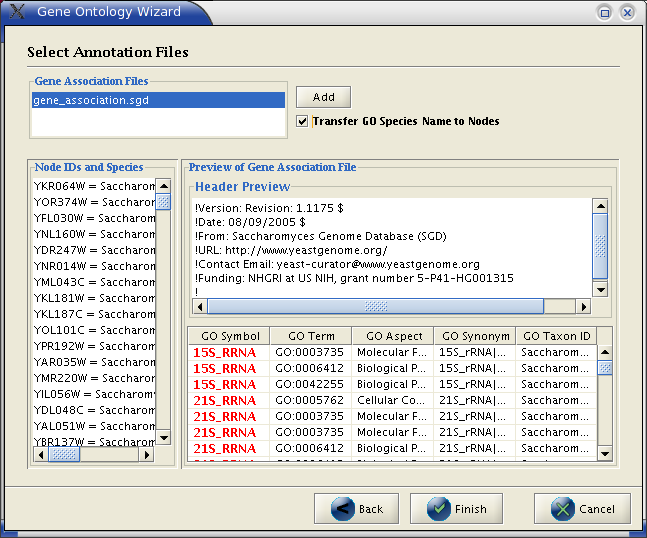

Annotations in Cytoscape are stored as a set of ontologies (e.g. the Gene Ontology - GO). An ontology consists of a set of controlled vocabulary terms that annotate the genes for a given organism and a synonym table for gene names. For example, using the Gene Ontology, the Saccharomyces Cerevisiae GAL4 gene’s biological process is described as “regulation of transcription”, to which GO has assigned the number 45449 (a GO ID). You can see below that “regulation of transcription” is a subcategory of “transcription”, which is a subcategory of “nucleobase, nucleoside, nucleotide and nucleic acid metabolism”, etc.
GO 8150 biological_process
GO 7582 physiological processes
GO 8152 metabolism
GO 6139 nucleobase, nucleoside, nucleotide and nucleic acid metabolism
GO 6350 transcription
GO 45449 regulation of transcription
Cytoscape can use this ‘hierarchical’ ontology to annotate recognized genes if the user chooses a level of the hierarchy to use for a given set of annotations. The ontology provided to Cytoscape does not have to be hierarchical, but if it is not, there is no real advantage to storing annotations this way compared to just storing the annotation terms in a node attribute file.
The Gene Ontology Server (originally called the biodata server) is a Cytoscape feature which allows you to load, navigate, and assign annotation terms to nodes in a network.
In version 2.3, Cytoscape has enhanced the Gene Ontology Server Wizard, which enables users to select a local ontology and annotation files from the user interface. Although 2.3 remains backwards compatible with the old file formats (the manifest file, which includes a list of anno (annotation) and onto (ontology) files), we strongly suggest using the new file formats. See Appendix B for a description of how the old file formats can be created and used.
New Ontology and Annotation Files
The standard file formats used in this release are OBO and gene association. The GO website details these file formats:
Ontologies and Definitions: http://www.geneontology.org/GO.downloads.shtml#ont
Current Annotations: http://www.geneontology.org/GO.current.annotations.shtml
Cytoscape provides a copy of the Gene_ontology.obo text file in the annotation directory for use with the software. An up-to-date Gene_ontology.obo file is maintained by the GO project (updated every 30 minutes). Please download the latest version of this file (from http://www.geneontology.org) if you intend to use it during analysis. In addition to the gene ontology file, we also provide gene association files for Yeast and Human (gene_association.sgd and gene_association.goa_human, both in the annotations directory). Other gene association files can be found at the gene ontology web site.
Sample Files gene_ontology.obo:
format-version: 1.0 date: 11:08:2005 16:57 saved-by: midori auto-generated-by: DAG-Edit 1.419 rev 3 default-namespace: gene_ontology remark: cvs version: $Revision$ subsetdef: goslim_yeast "Yeast GO slim" subsetdef: goslim_goa "GOA and proteome slim" subsetdef: goslim_plant "Plant GO slim" subsetdef: goslim_generic "Generic GO slim" subsetdef: gosubset_prok "Prokaryotic GO subset" [Term] id: GO:0000001 name: mitochondrion inheritance namespace: biological_process def: "The distribution of mitochondria\, including the mitochondrial genome\, into daughter cells after mitosis or meiosis\, mediated by interactions between mitochondria and the cytoskeleton." [PMID:10873824, PMID:11389764, SGD:mcc] is_a: GO:0048308 ! organelle inheritance is_a: GO:0048311 ! mitochondrion distribution [Term] id: GO:0000002 name: mitochondrial genome maintenance namespace: biological_process def: "The maintenance of the structure and integrity of the mitochondrial genome." [GO:ai] is_a: GO:0007005 ! mitochondrion organization and biogenesis
gene_association.sgd (annotation file for yeast):
SGD S000003916 AAD10 GO:0006081 SGD_REF:S000042151|PMID:10572264 ISS P aryl-alcohol dehydrogenase (putative) YJR155W gene taxon:4932 20020902 SGD SGD S000005275 AAD14 GO:0008372 SGD_REF:S000069584 ND C aryl-alcohol dehydrogenase (putative) YNL331C gene taxon:4932 20010119 SGD
The Gene Ontology Server Wizard is a graphical user interface used to select ontology and annotation files. By following the wizard, you do not have to write manifest files, which were used in older versions of Cytoscape to specify the file location of the ontology and gene annotation files.
Step 1. Select Data Format

In this panel you can select two types of data formats: Cytoscape BioDataServer or Gene Ontology. Select Gene Ontology to use the new formats (obo and gene_association files). If you want to use the old file formats, select Cytoscape BioDataServer . A description of how the old formats can be created and used can be found in Appendix B.
Step 2. Select OBO File

If you choose Gene Ontology in the first step, this panel appears to help you first select an OBO (ontology) file. The wizard displays the header information of the OBO file loaded. Once an OBO file is loaded, the Next button becomes enabled. Click the Next button to proceed.
Step 3. Select Gene Association File

You can add a gene_association file to the list by pressing Add button. Once you select a file, the file name will be shown in the list in the left. If you click on the file name, the header information will be displayed in the center window. You can select multiple gene_association files.
The "Transfer GO Species Name to Nodes" can be used to apply the species name (taxon) found in the selected Gene Association file to the nodes of the currently selected network. This may be an important feature if the nodes of your network do not have a species attribute set. You can can see the current network's nodes and species attribute for the nodes in the left hand window. You can see the GO symbols, terms, aspects, synonyms, and taxons (species), in the bottom window. For nodes in your network to map to GO terms, either a symbol or synonym of a term must match the node ID.
Step 4.
Once you have finished specifying the options, click on finish. The OBO file and gene_association files specified in this panel will be automatically loaded. This will then open up the Ontology Mapper dialog.

The Ontology Mapper is used to reduce the number of node attributes created from the gene ontology. Selecting a term in the left hand column and clicking the >> button will select that term to create an attribute for. You can unselect a term using the << button. The Apply All button will select all terms for attribute creation. Once the desired terms have been selected, click the OK button. This will create node attributes for all selected GO terms. The GO terms will now be visibile in the Node Attribute Browser by clicking on the Select button ( ).
).
If you would like to choose deifferent GO terms from the same gene association file, you do not need to re-import the files. Instead, you can click the GO button ( ) in the Attribute Browser panel or on the File → Import → Ontology → Ontology Mapper menu and the Ontology Mapper dialog will open.
) in the Attribute Browser panel or on the File → Import → Ontology → Ontology Mapper menu and the Ontology Mapper dialog will open.
Note 1: The OBO file and gene_association files MUST be in the same directory, and you must have write permission for the directory.
Note 2: Please make sure that your network file uses exact same ID’s used in the gene association file (Symbol or Synonym column). Otherwise, the annotations will not appear in the Annotation Panel.